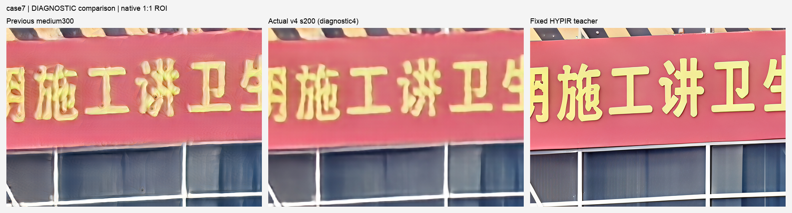
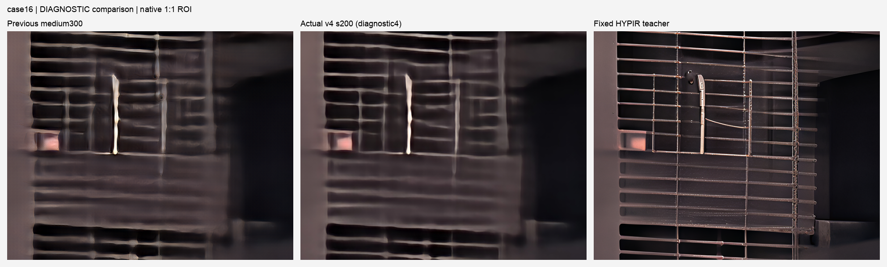
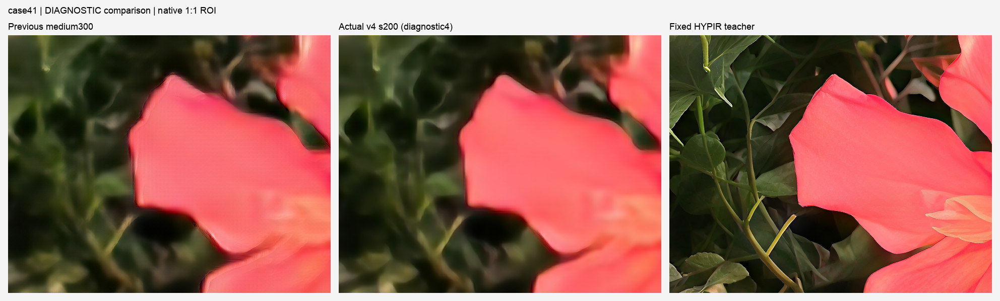
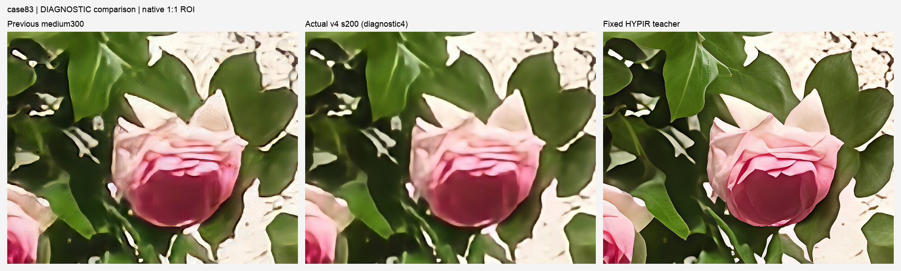

Middle column: real candidate native diagnostic4 sequence (cases7/16/41/83). Left and right: verified medium300 and fixed HYPIR full103 reference crop caches. Actual inputs and native geometry agree, but this is not a matched full-render RNG sequence or formal quality evaluation. Fixed 1:1 pixels, layout only; no resize, filter, enhancement or regenerated pixels. Smoothness alone does not prove character, bar or leaf structure recovery.



